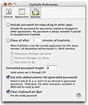

Setting Security Preferences in CiphSafe
The Security preferences pane controls several security-specific options.
- The "Include password on copy/drag to other apps" option lets you select whether the password of any entries copied or dragged to applications other than CiphSafe is included. The password is always included if the copy or drag target is another document in CiphSafe.
-
The "Close all after ... minutes of inactivty" options allows you to have
CiphSafe automatically close all open documents if it is left as a background
application for the given number of minutes. The accompanying selections for
"Autosave changes on close", "Discard changes on close", and "Ask what to do"
control what CiphSafe does when a document has been modified but not yet
saved:
- Autosave just saves, then closes the document
- Discard causes any updates to be lost (so be careful with this)
- Ask will bring up a sheet asking what to do, which does defeat the purpose of closing a bit, but is safer from data loss.
- The "Generated password length" option lets you set how many characters to use when a password is generated. The longer the better, but pay attention to what some web sites say for password restrictions, as some have short maximum lengths.
- The "Use only alphanumerics for generated passwords" option allows you to select whether or not you want a generated password to include special characters. Some web sites don't like anything other than alphanumeric, hence this option. When disabled (use special characters as well), this includes a number of other characters, from parenthesis to plus and minus, and so on. If you're really curious, see the variable genAll in CSWinCtrlEntry.m.
- The "Clear clipboard on Quit" option tells CiphSafe that, if the last item placed on the clipboard came from CiphSafe, to clear it out when quitting. This causes the clipboard to be empty when you quit CiphSafe.
